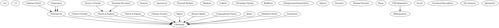

This work is licensed under a Creative Commons Attribution-NonCommercial 4.0 International License.
This work is licensed under a
Creative Commons Attribution-NonCommercial 4.0 International License.
The CWRC Ontology was produced by the Canadian Writing Research Collaboratory (cwrc.ca) to bring together various linked data materials produced within the Collaboratory related to the writers, writing, and culture.
Although it contains quite general components for activities such as annotation and citation, its focus is on describing and relating aspects literary studies and literary history, with a strong emphasis on gender and intersectional analysis indebted to its roots in The Orlando Project, a history of women’s writing in the British Isles. It links to a number of standards while attempting to indicate the complexity of the relationship between representation and provenance in the production of linked data, and to convey the situatedness (Haraway, 1988) of the knowledge that it represents.
Some of the materials associated with this ontology are produced natively by activities conducted within the Collaboratory. Others are produced through a process of translation from embedded XML markup. In other words, some are the product of human creation or curation, and others are generated by machine.
This document is a human readable version of the ontology that cannot document all of the data structures within the ontology, which should be the primary source for understanding how the ontology works.
This document and the associated ontology will grow iteratively with modification made over time according to the amount of data translated and the ontological issues located over time. Continuity is ensured using the OWL ontology annotations for ontological compatibility and for deprecated classes and properties. Deprecated ontology terms remain present but are marked as such.
The Orlando Project embarked in 1995 on a history of women’s writing in the British Isles from the beginnings to the present (Brown, Clements et al., 2007a;Brown, Clements et al., 2007b). This born-digital collaboration devised a knowledge representation (Brown, Clements et al., 2006) in the form of a bespoke SGML tagset to encode the priorities and concepts in the text as it was being written. This tagset structures the biocritical, chronological, and bibliographical content of the resulting history of more than 8 million words and 2 million tags. The schema formed the basis of the Canadian Writing Research Collaboratory’s schema for similar content, and provides the foundation of the ontology provided here. The ontology design responds to the challenges of shifting from semi-structured to structured data (Smith, 2013).
Orlando: Women’s Writing in the British Isles from the Beginnings to the
Present (Brown and Clements and et al., 2006) is published by Cambridge
University Press:
http://orlando.cambridge.org.
The scholarly introduction and introduction to the Orlando tagset are
available here:
http://orlando.cambridge.org/public/svDocumentation?&d_id=ABOUTTHEPROJECT.
Contributors to Orlando are listed here:
http://orlando.cambridge.org/public/svDocumentation?formname=t&d_id=CREDITSANDACKNOWLEDGEMENTS.
The Orlando Project’s XML schemas and the CWRC Project’s XML schema are
available at
https://github.com/cwrc/CWRC-Schema/tree/master/schemas.
The schema covers entities, classes, and relationships associated with the domains of literature and literary as understood from a feminist intersectional perspective. The ontology design responds to the challenges of shifting from semi-structured to structured data (Smith, 2013). Although linked data triples stand on their own formally, many are derived from discursive prose and are best read in an environment that links back to their original context. The CWRC ontology design avoids representing RDF extractions from Orlando data as positivist assertions, and yet produces machine-readable OWL/RDF-compliant graph structures. It allows references to, without endorsing, external ontological vocabularies that are nevertheless part of documenting intersectional cultural processes and identities.
We employ a number of strategies for linking to other ontologies. Our architecture does not import other ontologies wholesale, but relates to large vocabularies in defined ways. We try not to abuse sameAs predicates (Halpin, Hayes et al., 2010). We adopt external namespaces and associated classes and terms wherever possible when they are in widespread use and their vocabularies are broadly compatible with ours, as in the case of the foaf and bibo vocabularies. For some terms such as those for religious denominations or genres, we are happy to draw on other vocabularies’ terms and definitions in part or in whole for ours, as in the case of terms from the Getty Art and Architecture Thesaurus (Getty Research Institute). Other terms are referenced but at one remove. This is particularly common in relation to the vocabulary associated with Cultural Formation (see below), which is understood primarily as representational, and within which identity terms are typed as labels and related to other internal narrower instances of labels that indicate the intersection of that term with one or more type of identity categorization. These are in turn related to external ontologies as subclasses, with a view to indicating that, although related, the terms and their definitions are not commensurate with those used in the CWRC vocabulary. By means of this structure, our vocabulary positions all terms associated with processes of Cultural Formation as in effect labels, retaining the ambiguity of terms that draw together identity categories.
Vocabulary reuse presented some challenges to the CWRC in that the specific intent of vocabularies is not always recorded and thus ambiguity in the intent of the author makes their reuse difficult. A typical example is that of religion where much ambiguity exists as to whether the term actually represents the religion as a belief system, the underlying religious organization, the social behaviours it implies or any combination of the above.
A the top level the CWRC ontology makes use of the following well know ontologies:
As noted above, some data associated with this ontology has been generated from XML structures (Simpson and Brown, 2013). Provenance is thus particularly important, given that the data was not produced natively in RDF but rather in the form of tags embedded in a discursive context. In such cases, the relevant portions of the text are provided in the form of snippets, which within the dataset become instances of contextual notes or human-readable annotations to which the ontological classes are directly tied.
The wholesale import of entire vocabularies within the CWRC ontology was likely to cause logical and ontological issues. To this end, we opted not to use the <owl:import> construct and to either link to vocabularies externally or to clone specific sets of terms from selected vocabularies. Similarly, not all ontologies are well-defined but drawing from their narrative or some of their properties prouved usefull. To this end, we avoided the use of <owl:sameAs> so as not to bring in unintended properties or ontological structures into the cwrc ontology. In other cases, the Provenance ontology property <prov:derivedFrom> is used to indicate that the term was constructed using information from other terms without necessarily being equivalent. Direct linkages to other ontologies is usually done through the use of subClasses or <owl:equivalentClass>.
As noted above, labels are not only used here to indicate the particular terms associated with an element of the ontology, but to indicate, when used to type a class, its representationality or discursiveness.
Cultural diversity has been an increasing source of debate beyond and within the digital humanities community. The concentration within the Debates in Digital Humanities series (Gold, 2012; Gold and Klein, 2016) of pieces reflecting the increasing prominence of matters related to race, gender, cultural diversity and difference is but one marker of the extent to which diversity matters. This ontology seeks to convey an intersectional understanding of identity categories, as instantiated in The Orlando Project’s XML Biography schema. The Cultural Formation portion of the ontology recognizes categorization as endemic to social experience, while incorporating variation in terminology and the contextualization of identity categories. It understands social classification as culturally produced, intersecting, and discursively embedded. We invoke categories as the grounds for cultural investigation rather than fixed classifications, since such categories have never been stable or mutually exclusive (Algee-Hewitt, Porter, and Walser, 2016) For a more detailed explication of cultural formation, see Brown et al 2017.
The Orlando source data contains multiple types of data which includes annotations on source text, factual information and information about specific life events. The CWRC linked open data set represents this information as a series of cultural formations and cultural contexts.
While full, integrated traceability has always been a core need of repeatable experiments, this comes as a complexity cost within linked open data set in that the queries required to retrieve basic information become unwieldy. To this end the CWRC ontology records information in two different ways: through a series of Contexts that link the information to its original Orlando text and a series of granular properties that simply link individuals to their personal attributes. In this way, both rapid retrieval and deep provenance tracking can be achieved.
Two basic structures are used within the ontology to achieve this: Contexts and Cultural Formations. A cultural formation represent elements of lived social subjectivities and/or classification of people such as Race, Gender, Religion, etc. Contexts are used to link a fragment of Orlando prose to the individual it is referencing as well as to the specific cultural formation that is being assigned to the person. In addition, properties are separated in two categories: reported and self-reported, allowing for the qualification of individual statements.
The Cultural Formation classes recognize categorization as endemic to social experience, while incorporating variation in terminology and contextualization of identity categories by employing instances at different discursive levels.
Cultural Formation sub-classes and instances describe the subject positions of individuals through both Contexts and granular properties. This arrangements has its roots in the Orlando arrangement of Cultural Formations encodings that pointed users towards a framework for raising and debating complex matters for cultural investigation rather than standardized classifications, refusing to neatly group writers into distinct and fixed categories, since those categories were neither stable nor mutually exclusive (Algee-Hewitt, 2016).
With the shift to a linked open data approach an issue has been how to make this approach compatible with linkages to other ontologies and data sets outside of the Orlando reference. Furthermore, the move from "strings to links" has created another set of issues in that strings such as White, Black, English, etc... are in themselves ambiguous: White and Black can represent race or ethnicity, while English can also be ethnicity, nationality or a national heritage. Because Orlando uses these strings in Cultural Formations specific to, for example, race or ethnicity, this must be transferred to a specific Cultural Formation instance. Thus, there exists Cultural Formation instances that cover white as a race and white as an ethnicity. Lastly, there also exists a white label that be instantiated as either race or ethnicity, but not both.
This is departure from previous (non linked open data) controlled vocabularies in that the appearance of the term (in this case "white") does not determine the specific cultural formation in use, the term does. This also means that linkages to other data sets or vocabularies can be appropriately be made since multiple representations of the same concept are present within the CWRC ontology. As a last resort, or for data mining purposes, the term is also available as an concept whose actual Cultural Formation is undecided amongst the CWRC defined options. This allows for linkages to the ontology, such as can be required in text mining, which committing to a specific interpretation immediately.
Granular properties are meant as a simpler means of reporting information about individuals and their personal properties, some of which are self-reported. Some of the reported properties also includes forebears.
The original Orlando data makes religious reporting an difficult issue in that the original contexts did not differentiation between religious beliefs, membership within religious organizations and the explicit abscende of any religious belief.
We use a taxonomy for enumerating these beliefs. The taxonomy in itself is SKOS based and represents a loose mixtures of the shared belief and historical offshots. also not that the religion class is also an skos concept scheme that has multiple topConcepts.
Some relegious mouvements are organized and thus are also marked as foaf organizations
Taxonomy attempts to trace both the theological and/or organizational ancestry of the belief system. This is a highly subjective process.
The specific taxonomy is: 
The CWRC ontology contains over 240 genres.
Depending on the situation, the Orlando tags may reference any combination of sex, gender and/or sexual orientation.
Beyond the formalism of [citation on ontology design rules], the CWRC ontology follows the following design rules and styles:
SKOS (Simple Knowledge Organization System) enjoys widespread popularity in the semantic web community as it provides simple terms for taxonomies without requiring reasoner support. Whenever appropriate, SKOS terms are inserted within this ontology to link terms to each other. However, since these terms are not ontologically powered, their scalability is limited since each additional layer of terms within a taxonomy requires another database query.
Some of the constructs within the CWRC ontology are deep and require reasoning support. OWL is the preferred means of using this ontology, though the usage of the terms, SKOS-style, is possible.
This is a draft ontology that is very much in progress. It will continue to be developed, expanded, and revised as we discover the implications of how we have structured the ontology through using it to extract and explore our data, data and uses cases that necessitate expansion or refinement, and as new needs, understandings, and debates arise.
0.99 - Initial public release.